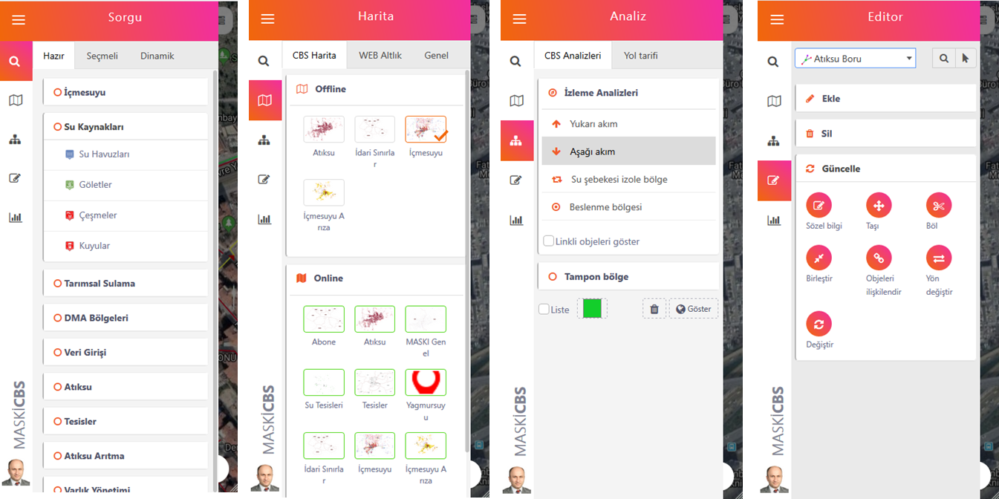

ODAGIS+™ yazılımı coğrafi veritabanında bulunan tüm coğrafi tabakaları CAD/GIS ortamında kullanabildiği gibi, aynı zamanda eş zamanlı olarak Web/Mobil ortamında da yayınlayabilmektedir. Bu yönüyle coğrafi veritabanı merkezli oldukça ileri seviyede bir entegrasyona sahiptir.
ODAGIS+ Mobil arayüzü, web arayüzü ile benzer fonksiyonları içerecek şekilde hazırlanmış bir arayüzdür. Bu sebeple kullanımı büyük ölçüde aynıdır.
Sisteme giriş kurumsal LDAP sistemi ile uyumlu olup her kullanıcı kendi kullanıcı adı ve şifresi ile yapılabilmektedir.
ODAGIS+ Mobil arayüzünde bulunan herbir butonun ne işe yaradığı aşağıdaki resimde toplu halde gösterilmektedir:
ODAGIS+ Mobil arayüzünde sol panelde yer alan menüler ve içerikleri aşağıda toplu halde gösterilmektedir.
